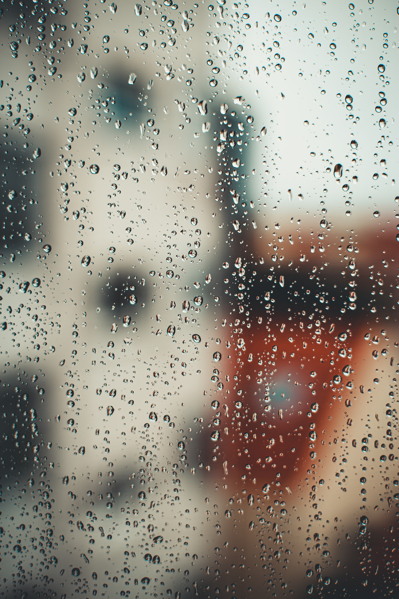
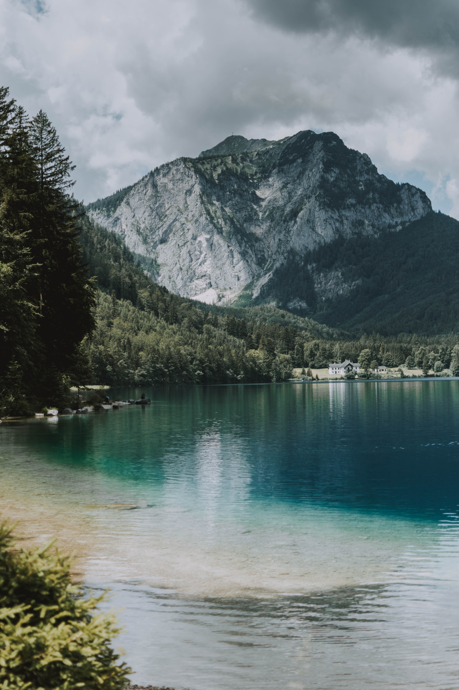

hero image/weather summary

I live the contrast the is use in this website, I thing that every single element in the layout, the color match with one another, and is super frindly to see the page.
5 day forecast

I live the contrast the is use in this website, I thing that every single element in the layout, the color match with one another, and is super frindly to see the page.
article
I live the contrast the is use in this website, I thing that every single element in the layout, the color match with one another, and is super frindly to see the page.
contact information

I live the contrast the is use in this website, I thing that every single element in the layout, the color match with one another, and is super frindly to see the page.